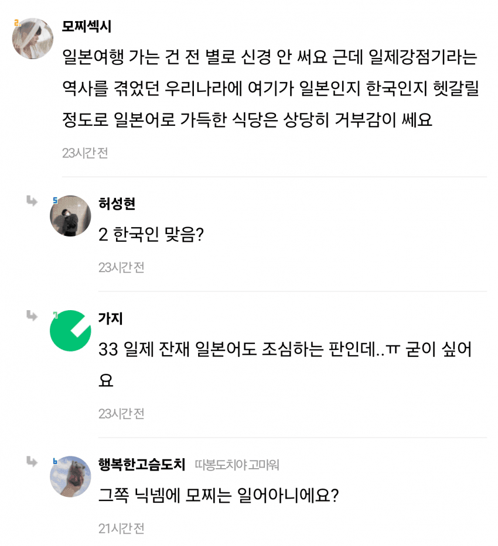

"일본어가 가득한 식당은 거부감이 쎄요"
댓글
븅신이븅신인걸알면은븅신아냐
모찌 일본
섹시 미국
한국어라고는 아예없는 주제에ㅋㅋ
저런 새끼들도 읽고 쓰게 만든 한글의 위대함
팩폭도치야 고마워
개인의 생각이지만 참.ㅋㅋㅋㅋㅋ
일본에 놀러감 - 일본의 직접적 이득
한국에 있는 일식집 - 걍 우리나라 식당
감성이 중요하다지만 전자가 더 싫어야 되는거 아닌가
익명에 기댄 알량한 도덕적 우월감 ㅋ
쟤 인스타에 백퍼 일본여행 피드 해놓고
온갖 미사여구 다 처발라 놨을걸
가오가이가 생각나네
남페미 같은 거야. 속으로 일뽕이라 겉으로 저러는 게 속죄의식임.
병신
저사람이랑은 별개로
식당에 영어로 써진 메뉴만 있거나
일본어 칠갑인 식당있으면 이게 뭐지 싶긴 함
뇌에 모찌가 가득찼네
혹시 업진살도 살살녹고 막 그런거 아닐까
모찌모찌 오모찌~
여기 스끼다시랑 다꽝 주시고 와루바시 하나만 더주세요
= 반일 오타쿠
위선 떨지말고 걍 속편하게 쳐놀면 될것이지
못배운것들이 어디서 유튜브나 쳐보고
애국자 빙의해서 꼴깞떠는거보면 비웃음밖에 안나옴
닉부터 영포티스멜🤮
일본여행가는건 신경안쓰는데 일본어는신경쓴다고??
선택적 노재팬운동하는거보니 딱 영포니노
병신
난 메뉴판에 다 영어로 적어놓고 한글로 작고 희미하게 덧붙여놓은 식당,
영어로 식재료 나열해놓은 메뉴판 이런거 좀 별로임
22 33 이지랄하는데서 거름
근데 을지로나 떠오르는 핫플가면 양옆으로 일식당만 즐비해있는거보고 조금 뭐시긴했음. 과거사를 떠나서.
어떻게보면 젊은층을 중심으로 한식당이 창업용으로 매력적이지않다는걸 보여주는거같아서 씁쓸하기도하고
병신이 병신 사상 갖고 병신짓 하는 거지 뭐